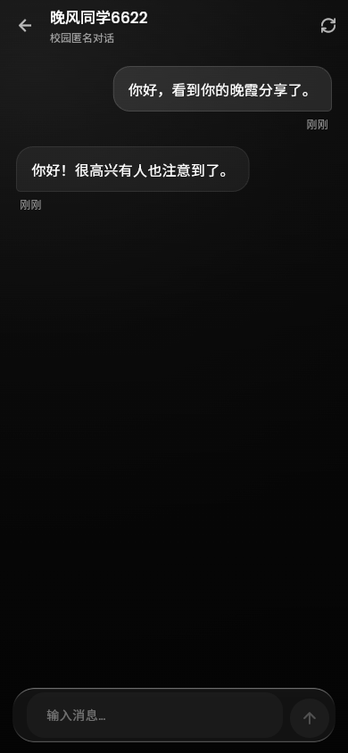

匿名表达
不必展示实名，用另一个名字说话
不必展示实名，用另一个名字说话
让共鸣发生在熟悉的校园里
按自己的节奏开始或结束对话
一些小事，一点心事。
还有一个，正在听的陌生人。
食堂的新菜、回宿舍路上的晚霞、一节有趣的课。把校园生活的碎片，分享给同样身在其中的人。
校园广场 · 分享 · 评论 · 收藏用另一个名字，说一点真实的心情。无需解释你是谁，也能得到一个认真的回应。
匿名私聊 · 让心事有回声自习搭子、课间茶水间、耳机里的那首歌。走进一个同校话题房间，让对话自然开始。
话题房间 · 找到同频的人轻一点的界面，真一点的交流。让每一次打开，都回到聊天本身。

App 实际运行界面 · 展示内容为测试数据
好的交流，从尊重彼此开始。关于匿名，我们也想坦诚一点。
无需填写真实姓名或手机号，其他人看到的是你的匿名昵称。匿名面向其他用户；服务运营方可以访问服务器保存的内容，私聊不是端到端加密，请保护好个人信息。
可以。广场、话题房间和私聊都按学校隔离。当前学校由用户自行选择，尚未接入学生身份认证，请使用学校全称加入对应校园。
你可以随时关闭私聊、屏蔽对方或举报不当内容，也可以删除自己的匿名身份与发布内容。继续或停止，都由你决定。
安装 Android 或 Windows 客户端，在连接设置中填写校园服务地址，选择学校并阅读社区约定后即可加入。本机服务地址和真机连接步骤见项目随附的使用说明。
没有标准答案的地方，欢迎真实的你。
正在检查安装包是否已发布…
64 位版适合大多数近年的安卓手机。需要兼容旧设备时，可选择通用版。